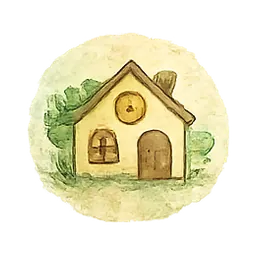

Wissensreihe · Teil 3 von 6
Inklusion beginnt nicht beim Kind
Warum wir Barrieren betrachten müssen – nicht nur Förderbedarf

Ein Kind darf eine Einrichtung besuchen.
Ist das bereits Inklusion?
Nicht unbedingt.
Anwesend zu sein bedeutet noch lange nicht, teilnehmen zu können. Ein Kind kann im selben Raum sitzen und trotzdem ausgeschlossen sein: durch Lärm, unverständliche Sprache, starre Abläufe, fehlende Kommunikationsmöglichkeiten oder die ständige Erwartung, sich an eine Umgebung anzupassen, die nicht zu ihm passt.
Inklusion beginnt deshalb nicht mit der Frage:
Wie machen wir das Kind passend?
Sondern:
Welche Barrieren verhindern Spiel, Lernen, Beziehung und Teilhabe?
Unterschiede sind nicht das Problem
Im Index für Inklusion werden Unterschiede zwischen Kindern nicht als Störung des gemeinsamen Lernens betrachtet, sondern als Ausgangspunkt und Chance.
Das klingt selbstverständlich. In der Praxis ist es das nicht.
Viele Systeme funktionieren nach einer unausgesprochenen Norm:
- Kinder sitzen still.
- Kinder antworten mit Lautsprache.
- Kinder halten Blickkontakt.
- Kinder wechseln schnell zwischen Tätigkeiten.
- Kinder ertragen Gruppengeräusche.
- Kinder verstehen indirekte Anweisungen.
- Kinder zeigen Belastung in einer Form, die Erwachsene erkennen.
Wer davon abweicht, bekommt häufig einen Förderauftrag.
Manchmal braucht ein Kind tatsächlich gezielte Unterstützung. Aber ebenso häufig braucht die Umgebung Veränderung.
Barrieren sind mehr als Treppenstufen
Bei Barrierefreiheit denken viele zuerst an Rampen und Aufzüge.
Für Kinder können Barrieren jedoch sehr unterschiedlich aussehen:
- ein hallender Speiseraum,
- mehrere gleichzeitige Anweisungen,
- Zeitdruck beim Anziehen,
- unklare Übergänge,
- fehlende Rückzugsmöglichkeiten,
- Aufgaben, die nur schriftlich erklärt werden,
- Gruppengrößen,
- stereotype Erwartungen,
- Armut,
- fehlende Hilfsmittel,
- eine Sprache, die Familien nicht verstehen.
Ein autistisches Kind, das aus der Mensa läuft, verweigert nicht automatisch Gemeinschaft. Vielleicht schützt es sich vor Lärm, Gerüchen, Berührungen und einem unvorhersehbaren Ablauf.
Eine inklusive Lösung könnte sein:
- früheres Essen,
- ein ruhiger Tisch,
- Gehörschutz,
- eine verkürzte Warteschlange,
- ein sichtbarer Ablauf,
- eine alternative Essensmöglichkeit.
Das Ziel ist nicht, dass das Kind die Mensa endlich aushält.
Das Ziel ist, dass es essen und dazugehören kann.
Teilhabe ist mehr als ruhiges Mitmachen
Ein Kind kann ruhig sein und trotzdem nicht beteiligt.
Es kann angepasst wirken und innerlich längst ausgestiegen sein.
In deiner Arbeit zur Qualitätsentwicklung in Kindertageseinrichtungen tauchen deshalb mehrere Ebenen auf: individuelle Voraussetzungen, inklusive Spiel- und Lernsituationen, multiprofessionelle Teams, Einrichtungskonzeption, Vernetzung und Partizipation.
Inklusion ist keine einzelne Methode. Sie ist eine Frage der gesamten Einrichtung.
Dazu gehören:
- die Haltung der Fachkräfte,
- die Gestaltung der Räume,
- die Auswahl der Materialien,
- die Kommunikation mit Familien,
- die Entscheidungswege,
- die Reflexion der eigenen Praxis,
- die Zusammenarbeit im Team.
Partizipation braucht Einfluss
Kinder werden häufig „beteiligt“, obwohl die wesentlichen Entscheidungen längst getroffen sind.
Dann dürfen sie die Farbe eines Plakates wählen, aber nicht sagen, dass das geplante Angebot für sie überhaupt nicht passt.
Echte Partizipation bedeutet:
- Das Kind bekommt einen verständlichen Raum für seine Sicht.
- Es kann sich auf unterschiedliche Weise äußern.
- Jemand hört tatsächlich zu.
- Die Äußerung hat erkennbare Auswirkungen.
Das gilt auch für Kinder, die wenig oder nicht mit Lautsprache kommunizieren.
Ein Nein, ein Rückzug, eine Geste oder eine unterstützte Kommunikationsform dürfen nicht automatisch weniger zählen.
Vorurteilsbewusstsein gehört dazu
Barrieren entstehen nicht nur durch Räume und Abläufe. Sie entstehen ebenfalls in unseren Köpfen.
Beispiele:
- Ein lautes Mädchen wird anders bewertet als ein lauter Junge.
- Eltern in Armut gelten schneller als uninteressiert.
- Ein Kind ohne Blickkontakt gilt als respektlos.
- Ein stilles Kind wird als unkompliziert übersehen.
- Behinderung wird automatisch mit Hilflosigkeit verbunden.
- Angepasstes Verhalten wird mit Wohlbefinden verwechselt.
Vorurteilsbewusste Bildung bedeutet nicht, keine Vorurteile zu haben. Das wäre unrealistisch.
Es bedeutet, die eigenen Bewertungen regelmäßig zu prüfen.
Inklusion ist ein fortlaufender Prozess
Inklusion ist nie „fertig“.
Ein hilfreiches Vorgehen kann sich am Gedanken kontinuierlicher Qualitätsentwicklung orientieren:
- Planen: Welche Barriere wollen wir verändern?
- Ausprobieren: Welche konkrete Anpassung setzen wir um?
- Überprüfen: Was verändert sich für das Kind und die Gruppe?
- Anpassen: Was behalten wir bei, was muss anders werden?
Dabei zählt nicht nur, ob störendes Verhalten seltener wird.
Entscheidend ist auch:
- Nimmt die Teilhabe zu?
- Fühlt sich das Kind sicherer?
- Kann es mehr Einfluss nehmen?
- Wird es stiller, aber gleichzeitig erschöpfter?
- Muss es stärker maskieren, um akzeptiert zu werden?
Inklusion beginnt nicht beim Kind.
Sie beginnt dort, wo Erwachsene bereit sind, den Wald mit anzuschauen.
Verstehen. Verbinden. Verändern.
Drei Fragen für Teams
- Welche unausgesprochene Norm soll das Kind erfüllen?
- Welche Barriere könnten wir verändern, statt nur das Verhalten zu bearbeiten?
- Woran erkennen wir echte Teilhabe – nicht nur störungsfreies Mitmachen?
Quellenbasis: Arbeiten zu Inklusion, Index für Inklusion, Qualitätsentwicklung, Partizipation und vorurteilsbewusster Bildung; Waldkätzchen-Konzept zu Würde, Teilhabe und Barrieren.
Barrieren erkennt man leichter zu mehreren.
Für Kitas, Schulen und Teams biete ich Fallberatung und Fortbildung an – für eine gemeinsame Sprache, die nicht bei der Schuldfrage endet.
Die ganze Reihe
Verstehen. Verbinden. Verändern.

Manche Fragen klären sich
schneller im Gespräch.
Ich melde mich in der Regel innerhalb von zwei Werktagen.